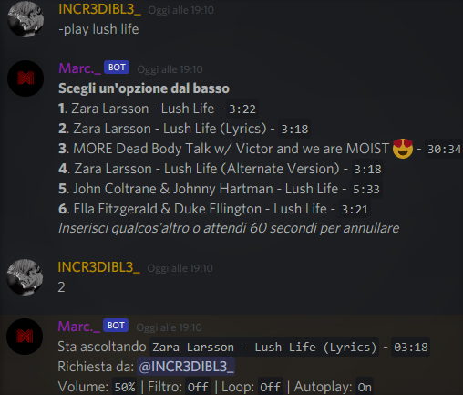

Home
Cos' e'
Info Specifiche
Comandi
Contatti
Cos' e'

Con Marc._ puoi ascoltre musica senza nessun
tipo di interruzione, idealizzato appositamente
per la riproduzioni di conenuti in streaming
mediante ricerca youtube.
Oltre alle funzionalità musicali si hanno anche
delle funzionalità aggiuntive nelle diverse chat
testuali,
Clicca qui
per le specifiche dei Comandi.